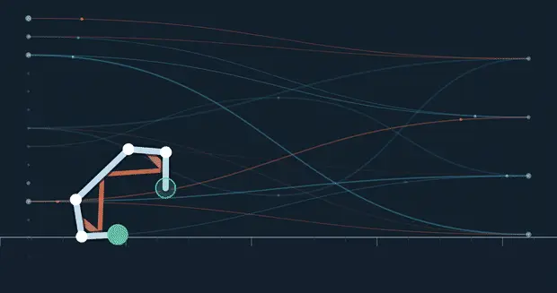
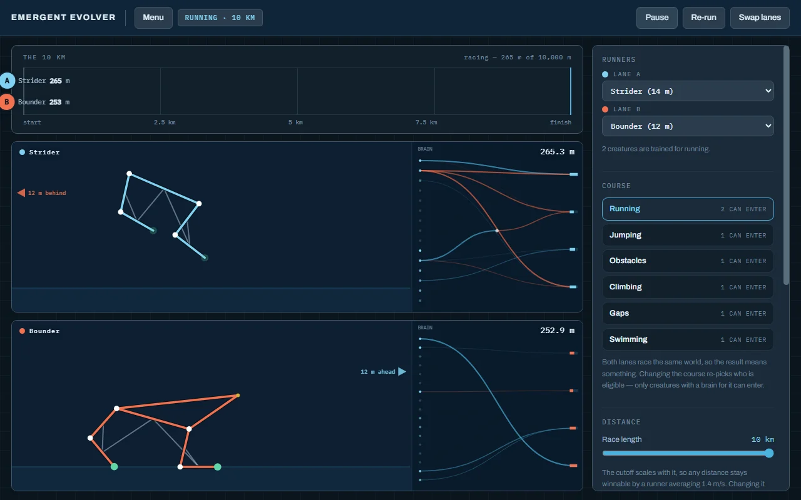
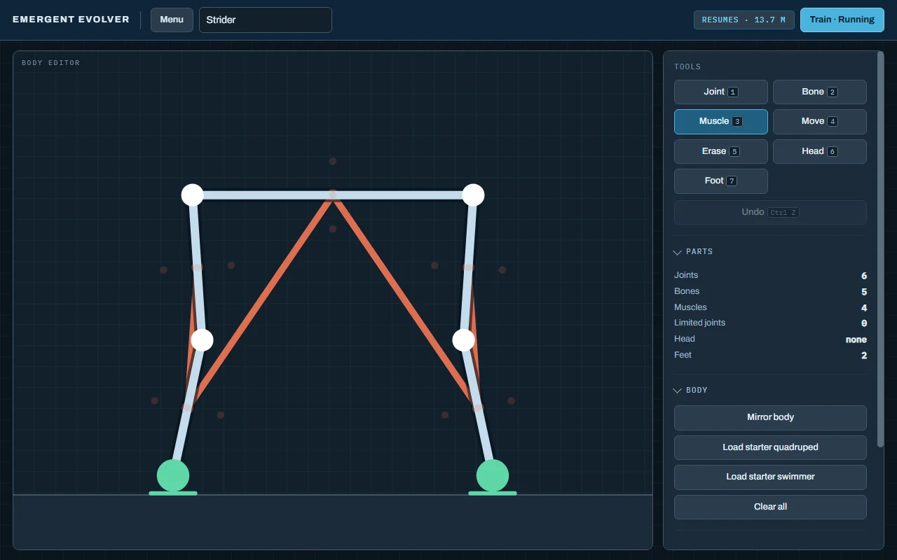
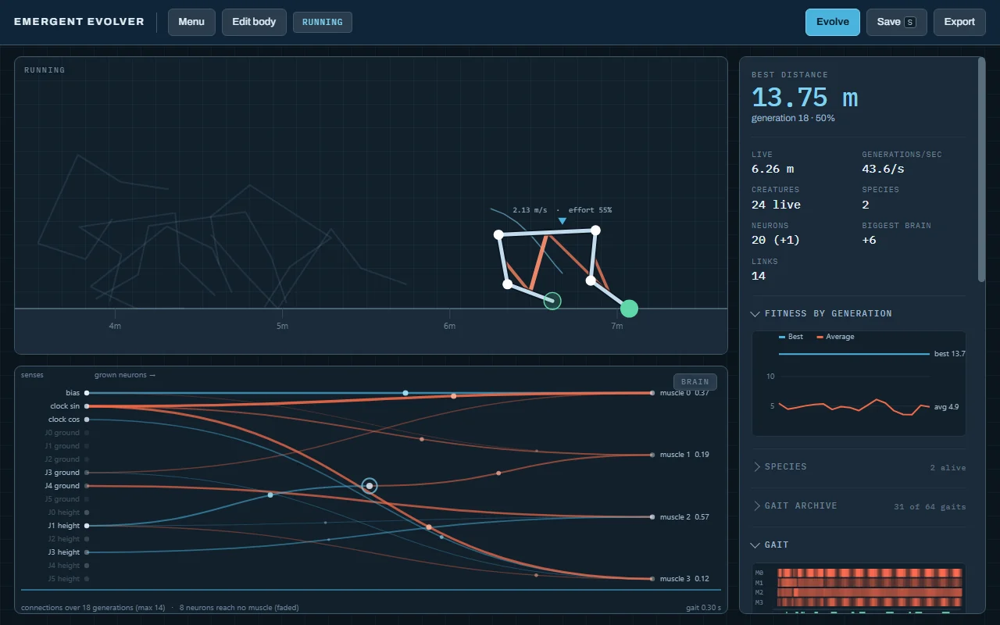
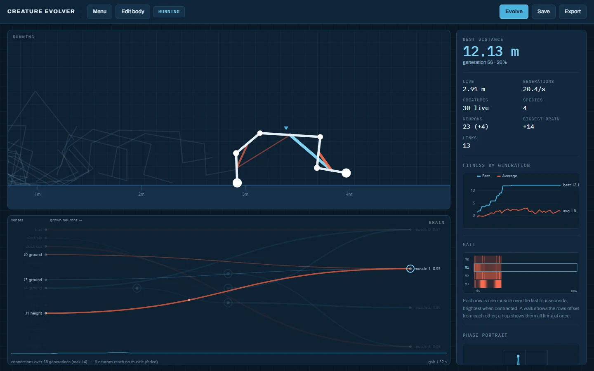
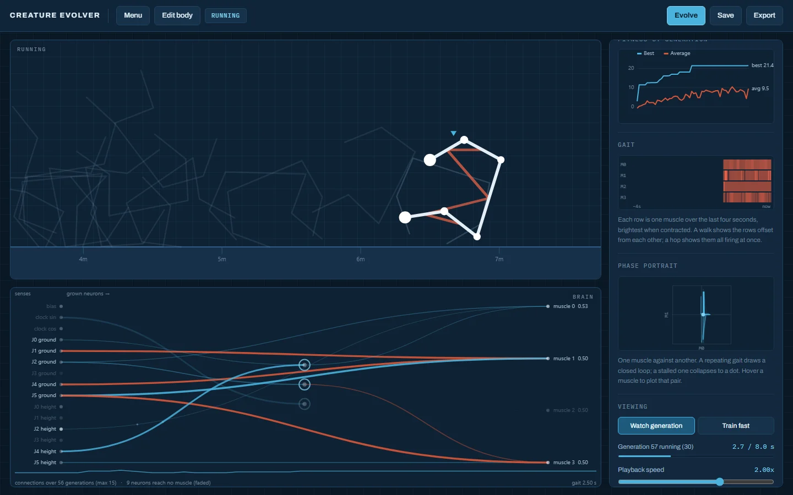
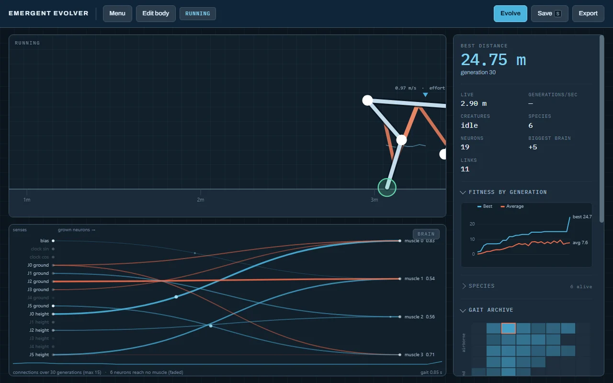
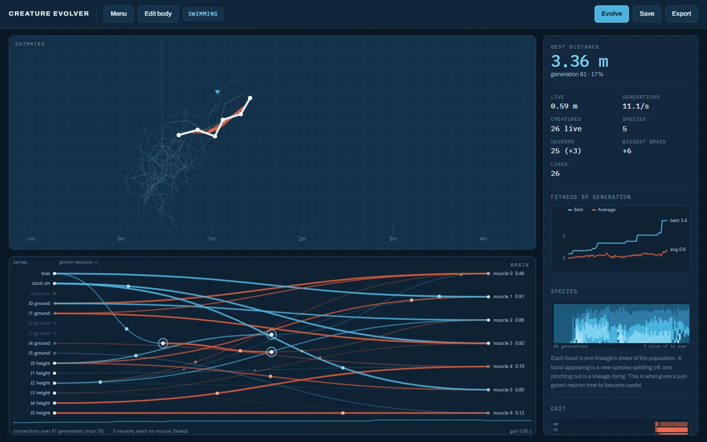
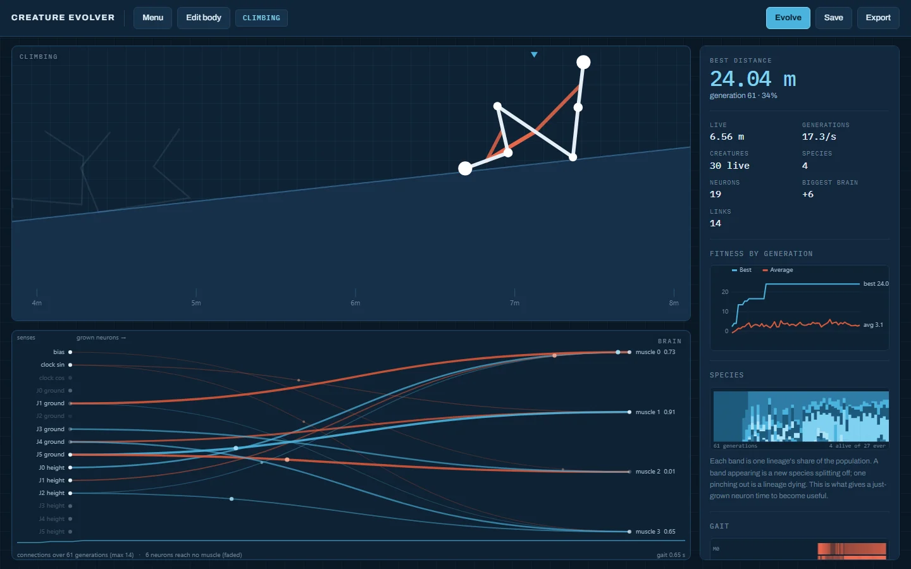
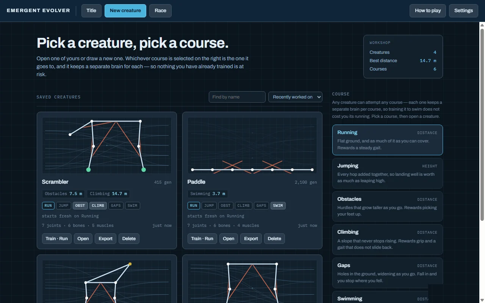

Emergent Evolver
You draw an animal. You do not tell it how to walk. A neural network starts from nothing, grows its own neurons and connections, and after a few hundred generations something runs.
No download, no account — it runs in the page.

- Status
- Released
- Built with
- Vanilla JS
- Dependencies
- None
- Whole game
- One HTML file
- Courses
- 6
- Install
- Not required
What it is
Emergent Evolver gives you a body editor — joints, bones, muscles, feet, a head — and then hands your creature to a neural network that starts from noise. There is no animation and no scripted gait. Twenty-odd creatures attempt the course, the best few breed, and the network grows new neurons and new connections as it goes.
After a few dozen generations something drags itself forward. After a few hundred, something runs.
The parts I am proud of
You can watch it think
The brain panel draws the network live: senses down the left, muscles down the right, grown neurons in between, every wire lighting as it fires. The gait panel shows which muscle pulls when, so you can literally watch a walk turn into a run. Most neuroevolution demos show you the result; this one shows you the machinery.
A map of every way of moving
Evolution keeps one answer and throws the rest away — including the creature that hopped instead of walking and finished two metres behind. That always felt like a loss, so the gait archive keeps them all: a grid organised by how a creature moves rather than how far, holding the best hopper, the best crawler and the best sprinter side by side. Click any square to watch it. Breed from it if you like it better than the winner.
Editing the body without wiping the brain
Add a tail to a creature you have trained for a thousand generations and it carries what it knows across, rewiring around the new limb instead of starting from noise. This was the hardest part to get right and the one that makes the toy actually playable.
Physics that makes cheating not work
A foot grips the ground and absorbs a landing; a bare joint scuffs and loses speed, so a creature that walks on its shins pays for it. Muscles tire when held. A head that touches the ground ends the run.
None of that is a scoring penalty. It is all in the world — so the exploits simply stop working, rather than being punished after the fact. That distinction matters: penalise a behaviour and evolution finds a way to do it just under the threshold. Make it physically unprofitable and evolution stops trying.
Six courses, six brains
Running, jumping, obstacles, climbing, gaps, swimming. Every creature can attempt all of them and keeps a separate brain for each — so training it to swim costs it nothing on land.
No install, no account, no engine
The entire thing is one HTML file, about 400KB, with zero dependencies. Everything saves in your browser, and any creature exports as a single line of text you can paste back in anywhere.
Screens









Go make something walk
It runs in the browser, it saves in the browser, and it takes about a minute before the first creature drags itself forward.
Play free on itch.io →